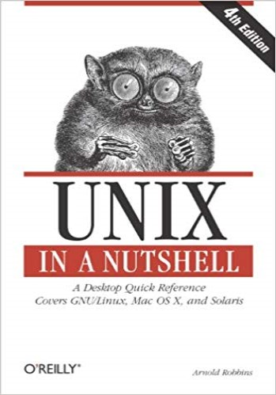

Summary
Unix in a Nutshell by Daniel Gilly and O’Reilly & Associates Inc. is a Unix referencemanual for desktop users, specifically regarding
System V and Solaris 2.0. The book,however, includes commands and information regarding many Unix systems ondifferent platforms. Unix in a Nutshell is designed
to be used by programmers andcasual desktop users alike, containing both simple Unix commands and syntax, all theway to software development and programming. Unix
was an operating system originally developed by AT&T in 1969 for the Bell System,another product from AT&T. AT&T developed the C language at the same time as the Unix
operating system. However after Unix was sold, Unix became more popular withprogrammers and desktop users as an operating system that could support multipleusers as well
as be portable. Despite its origins as a language meant for programmersand developers, varieties of Unix, such as the macOS, have become some of the mostpopular operating
systems in the world.*Understanding Unix is important for people today in order to understand the roots ofsome of the most popular operating systems, and even use the Unix
shells in operatingsystems like macOS and Linux. The book Unix in a Nutshell can help people understandthe underlying concepts of the original operating system macOS and
Linux were basedon. Understanding the foundations of modern operating systems is crucial to being ableto troubleshoot and problem solve when faced with an unfamiliar
challenge in acomputer setting. Unix in a Nutshell could also be a good starting place for newprogrammers, as it has an entire section on programming with Unix and the
syntax ituses, thus allowing for future innovation at places like DreamPort.*The book is also relevant to DreamPort and its focus on technology and innovation, firstof
all because Unix is an operating system, and all computers use operating systems.Unix is also important to innovation because one needs to understand the roots of
pasttechnology in order to create new technology. Unix is a foundational operating system toLinux as well, which is very popular in the cybersecurity world.
DreamPort’sdevelopment of new software requires the use of operating systems based on Unix, or atleast inspired by Unix.Overall, though most computers no longer
run an unmodified version of Unix, thefundamentals of the operating system are still relevant to modern day programmers.Without Unix, we may never have seen Linux
or macOS in our modern day computers,which would have drastically impacted the development of our modern operatingsystems and software.
